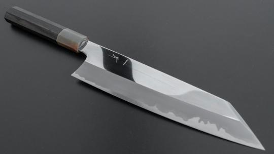
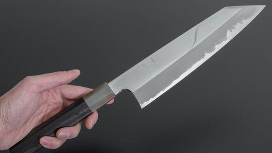
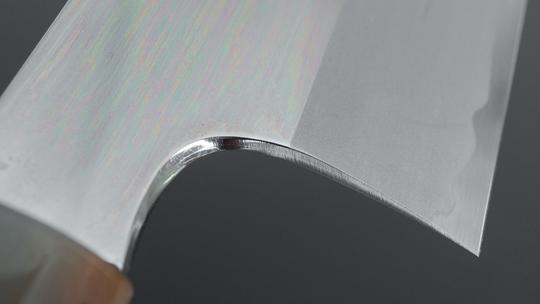

Hitohira Togashi White #1 210mm Gyuto
Hitohira Website
About
Handmade in Sanjo-Niigata, Japan, this Gyuto (Chef's Knife) is a beautiful balance of steel, Walnut, and Maple. The knife is a high carbon steel known as "Blue #2", which is a mixture of different steels, and it is clad in stainless steel to keep the blade strong.

About Japanese Knives
Japanese kitchen knives are known for having some of the sharpest blades in the world, many american chefs have switched from American or German made knives to Japanese knives because of their quality and sharpness

Other types of Japanese kitchen knives
- Santoku: Smaller chef's knife
- Nakiri: Vegetable knife
- Yanagiba: Tuna/sushi knife
